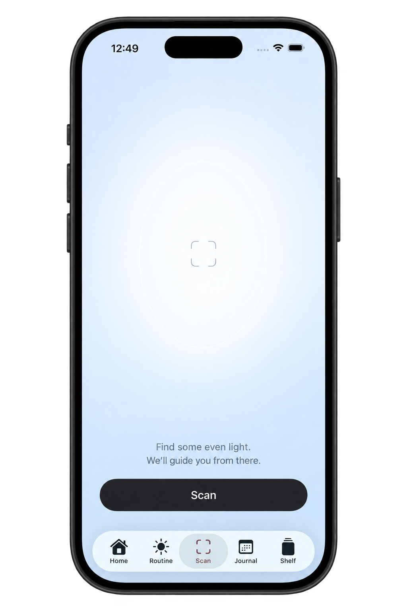

SkinAI
An iOS app I'm building to track skincare routines, organize products, and keep a journal of how my skin feels over time.
Why I made it
I started SkinAI because I wanted a better way to track my own skincare routine. I wanted to approach it a little like a lab experiment: which days did I break out, what products had I used, and when did my skin feel its best?
Keeping those details in one place would make it easier to follow my routine and look back at what changed over time.
Cal AI's business model also inspired me to think about how a tool I wanted for myself could become a useful product for other people.
What I'm using
I'm building the iOS app in Xcode with Swift and SwiftUI, using SwiftData for local storage and Supabase (PostgreSQL) for the shared product catalog.
I use Apple Vision to scan ingredient labels and clean product photos, with JavaScript, Node.js, and SQL for the product ingestion system.
